Chapter 2 Explore Your Microbiome
This chapter assumes you have already sequenced your microbiome. You’ll have a breakdown of the types of microbes found in your sample, and depending on the lab, you’ll have some simple web tools to explore your sample. I have a complete review of the various microbiome sequencing services, but for most people the best service is uBiome, a low-cost (under $100) lab that will give you results in a few weeks. Although their web interface is limited and a bit confusing, uBiome shines at letting you download the raw data, either as an easy-to-process JSON or CSV file, or as the original FASTQ file – the same format used by nearly all microbiome scientists. The powerful ability to study your sample in high-level tools like Python, R, or even Excel, makes this the best way for serious microbiome hackers to understand their results. But even if you don’t want to build tools for yourself, there are plenty of pre-built tools (like the ones on this site) that can do more analysis for you.
But first, let’s look at the built-in uBiome web tools. Although this description is specific to uBiome, the general principles apply to just about any site that offers basic microbiome analysis.
2.1 Getting Started
You just received an email that uBiome has finished processing your sample. Now what do you do?
The first stop is the uBiome Explorer web dashboard, where you’ll see an overview of your results. The instructions there are self-explanatory and you’ll learn most of what you need to know by simply clicking around. The following explanation will help you dig deeper.
If you only have one sample, your page will look something like Figure 2.1.
Figure 2.1: uBiome Explorer Insights Overview
That’s the Insights pane, designed to tell you the highlights. If this is your first time here, go ahead and breeze through this page, but don’t get lost in the details. As we’ll learn, scientists have barely scratched the surface of what we will eventually understand about the microbiome, so think of this page as a teaser – a hint of the potential. If your results show something you didn’t expect, say on diversity or body weight, don’t worry: it almost certainly just means that the Insights pane is wrong about you. Later we’ll see how to pull out far more interesting and useful results.
Click next on the “My Bacteria” tab. The colorful pie chart there is your first high-level glimpse of the bacteria found in your sample. Hover over it with your mouse (or tap with your finger if you’re on a phone or iPad), to see a pop-up view of the approximate percentages.
You’re seeing a phyla-based look at your microbiome. As we’ll learn in more detail later, this is a very high level view, a bit like how a Martian might see life on earth from far in outer space. Keep in mind that by “very high level”, we mean very high, the equivalent of seeing life only at the level of “vertebrate” and “invertebrate”. The incomprehensible diversity of bacterial life means that at this level, you don’t even bother separating fish from one another or for that matter, from land animals: just lump all of them together. At the phyla level, mammals, reptiles, fish – they’re all the same. Similarly, when you see the phylum Firmicutes, for example, think of it as having as encompassing as much variation as all the vertebrates, from those on land, in the ocean, big, small, harmless, dangerous and everything in between. In other words, this first approximation is pretty crude.
This time the various phyla are represented as percentages of the whole, so some of them are relegated to tiny slices of the pie. That doesn’t necessarily mean they’re unimportant, though, because in the world of life, even some tiny populations can exert an outsized influence. A wolf is just one of a gazillion different creatures in Yellowstone National Park, but that is little comfort to a rabbit.
Remember too that so far we’re treating each individual organism as if it’s the same size as the others, but that’s an oversimplification too, just like it would be a mistake to assume that elephants matter more because they’re bigger than humans.
All we know at the phylum level is that proportionately, certain large classes of bacteria are more well-represented than others. That may not sound like much to go on, but as we’ll see, scientists have been able to learn quite a bit from tiny clues like this.
2.1.1 How are you different?
Since so little about the microbiome is well-understood, most of the time it will be hard to interpret your results by themselves. This is where the power of uBiome’s citizen science can help, because the web page lets you easily compare your results with other people.
That first bacteria, Deinococcus-Thermus is an extremophile, usually only found in harsh environments, like the impossibly acidic human stomach. Why would I have so many more than other people like me?
One clue is the similarly-high levels of Proteobacteria, which as we just noted is often high in people with gastro-intestinal issues. Maybe I was exposed to something that released a bit of stomach acid, and its extremophile Deinococcus into my colon.
Verrucomicrobia is elevated too, though not by much. This is a Phylum that is generally associated with soil microbes, though it’s not unusual to find it in the gut as well.
I looked back at my notes during the period of a few days before this sample, and interestingly I had been doing work in my garden at the time. We have deer and other animals that come near our house…is it possible that I was exposed to some animal excrement, maybe some of which somehow made it into my gut?
It’s just a theory, and perhaps an unlikely one, but I wonder if my body was fighting some type of pathogen as a result of my outdoor activities. Now before we get too excited, keep in mind that I never felt the slightest bit ill during this period. Can I thank my microbiome? Perhaps I was exposed to something nasty, the kind of bug that under other circumstances might have wreaked havoc and left me terribly sick for days. Now I have no way of knowing for sure, but this tidbit makes me wonder if maybe my microbiome acted as a guardian angel, protecting me from something much worse.
Similarly, your own results comparing to others may lead you to clues about aspects of your environment you didn’t otherwise suspect.
Incidentally, since this test I’ve sent dozens of additional samples to uBiome and never saw that Deinococcus thing again. Good riddance? or maybe I should be thankful for the protection, and hope that little bits of it may still be present, undetectably in my stomach, waiting to fight another external enemy the next time I come in contact with something in the soil.
2.2 Microbes to watch
If you’re brand new to the microbiome, the variety of microbes can be pretty daunting. Let’s look through specific microbes you’re likely to see and compare them to the ones that were in my samples.
In this first step, we’ll just consider the most common microbes and the overall consensus on what they do. Later, in the chapter on experiments, we’ll show more about how you can manipulate them.
What you’re really wondering is how does your sample compare to others? Do you have an unusual abundance (or lack) of a particular taxa? Is there something that might indicate a greater or lesser similarity between your sample and certain other types of people? That is a very difficult question which we’ll address over and over in this book, but for now let’s just look at the overall abundances among the hundreds of random people who have sent me their samples over the years.

Figure 2.2: Relative abundance of the most common phylum across hundreds of gut samples.
This is a “box and whisker” chart where the white boxes show where the vast majority of samples occur. The line through the middle of the white box is the median, and the other dots are outliers that fall outside the majority.
2.2.1 The most common phyla
Most westerners will find their sample dominated by two phyla: Firmicutes and Bacteroidetes. These are so common in healthy people that it’s tempting to assume this is “natural” or “normal”, but like much else with the microbiome, the situation is different outside the western world, a clue that it’s difficult to summarize a single individual’s microbiome as “good” or “bad.” It all depends.
Prevotella is associated with carbohydrates, and you might think they’re more common in people who eat lots of
Proteobacteria If you’re an otherwise normal omnivore and see double-digit amounts of this it can be a sign that your body was recently under attack. That’s because the Proteobacteria includes many pathogens like E. Coli and Shigella. For example, in one of my tests I had 14% Proteobacteria, which often is elevated in people with gastric disorders like Crohn’s disease. That doesn’t mean that Proteobacteria is bad; in fact, it could mean the opposite, that we need more of these to fight back invaders. In my case the unusually high amount came right after a trip to Central America, during which my body was exposed to many new and possibly pathogenic microbes. My Proteobacteria fell soon after I returned to the U.S. and my normal diet.
Proteobacteria: come back quickly after antibiotics (“a weed”) QuantifiedBody
Does Proteobacteria play a role?
TS: Only 52 of the 4200 compounds found in normal mice blood were identified in germ-free mice. The implication is that most of the chemicals in our blood are synthesized by microbes.
Using examples from my own sampling, can I say something about what to look for?
2.2.2 Firmicutes
Firmicutes is usually the most abundant in uBiome tests of modern, urban people, and for good reason: it’s very good at sucking energy out of the types of high-fat, highly-processed food we eat in industrialized societies. For that reason, some scientists have claimed it might associate with obesity, since its presence might indicate a gut that is highly-optimized to pull as many calories as possible from food. On the other hand, it’s not hard to find skinny people with lots of Firmicutes, so this theory doesn’t always hold. I’ve seen it lower in vegetarians, and I suspect that maybe it reflects diet more than weight.
2.2.3 Bacteroides
Bacteroidetes is not as good at digesting fat, so it sticks to high-fiber foods like those in vegetables, which is why vegetarians tend to have high levels of this phylum. It’s often most prominent outside the industrialized world, too, where people eat less meat. Often, though not always, when I see a sample with high Bacteroidetes (i.e. higher than Firmicutes) it’ll turn out the person is a vegetarian. Incidentally, don’t confuse this phylum with the similar-sounding genus Bacteroides [see below].
Although many of the species in this genus are pathogenic, you’re much more likely to encounter one of the “mutualist” versions that are co-dependent on humans, providing us with many important features we have not had to evolve, while our gut gives back nutrients and more that they need to survive. Read much more in (Wexler 2007).
In general I find too much day-to-day variability to rely on a single test. Here’s how my levels of the two most common phyla change on a daily basis:
If you sampled on a Monday, you could well get a different answer than if you sampled on a Tuesday.
In fact, although there does seem to be an average where my Firmicutes is most abundant, there are many days where the amounts drop well below half.
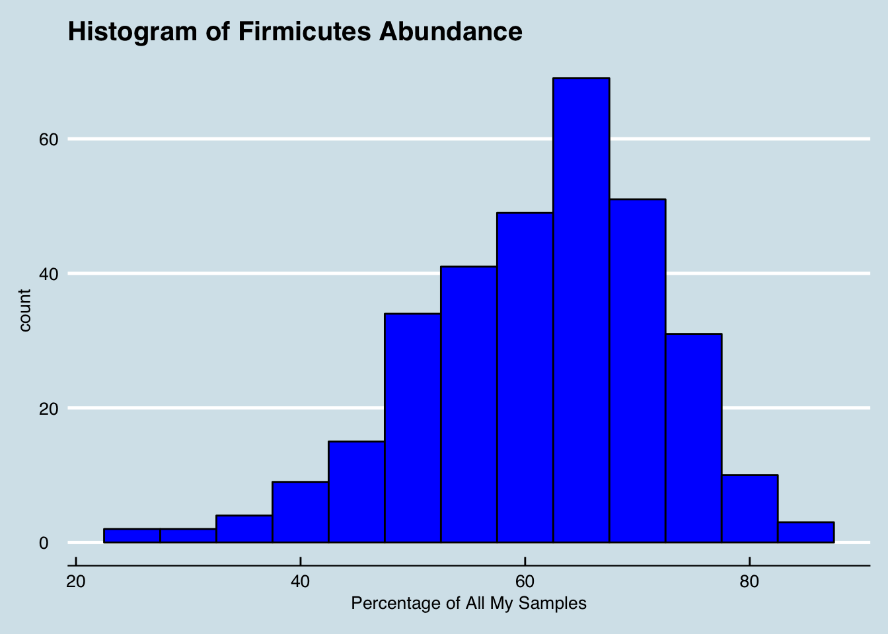
2.2.4 Bifidobacterium
The blue dots indicate days on which I ate some beans.
2.2.5 Lactobacillus
A 2017 careful study of rats revealed higher levels of Lactobacillus on a diet of chicken (versus beef or soy)2. The blue dots represent days on which I ate poultry (chicken or turkey). Green dots are days I ate beef.
2.2.6 Fat and my levels of Lactobacillus
Here’s how much fat I eat daily. Does this correlate with my levels of Lactobacillus?
2.2.7 Other microbes and digestion
Bacteroides plebeius : Japanese version can digest seaweed, thanks to genes stolen from Zobellia galactanivorans, that lives on the seaweed. Hehemann et al. (2010)
Notice that I seem to have quite a bit of this taxa:
## [1] "Bacteroides fragilis" "Bacteroides thetaiotaomicron"
## [3] "Bacteroides uniformis" "Bacteroides vulgatus"
## [5] "Bacteroides caccae" "Bacteroides acidifaciens"
## [7] "Bacteroides massiliensis" "Bacteroides salyersiae"
## [9] "Bacteroides plebeius" "Bacteroides finegoldii"
## [11] "Bacteroides chinchillae" "Bacteroides sp. TP-5"
## [13] "Bacteroides stercorirosoris" "Bacteroides coprocola"
## [15] "Bacteroides eggerthii" "Bacteroides clarus"
## [17] "Bacteroides nordii" "Bacteroides ovatus"
## [19] "Bacteroides sp. AR20" "Bacteroides sp. AR29"
## [21] "Bacteroides sp. XB12B" "Bacteroides sp. D22"
## [23] "Bacteroides sp. SLC1-38" "Bacteroides sp. XB44A"
## [25] "Bacteroides sp. 35BE35" "Bacteroides sp. 35AE37"
## [27] "Bacteroides sp. 31SF15" "Bacteroides intestinalis"
## [29] "Bacteroides dorei" "Bacteroides sp. EBA5-17"
## [31] "Bacteroides oleiciplenus" "Bacteroides faecis"
## [33] "Bacteroides sp. J1511" "Bacteroides sp. DJF_B097"
## [35] "Bacteroides sp. 14(A)" "Bacteroides faecichinchillae"
## [37] "Bacteroides stercoris" "Bacteroides sp."
## [39] "Bacteroides sp. 2_2_4" "Bacteroides barnesiae"
## [41] "Bacteroides sp. dnLKV9" "Bacteroides sp. S-17"
## [43] "Bacteroides sartorii" "Bacteroides sp. 3_1_40A"
## [45] "Bacteroides sp. R6" "Bacteroides coprophilus"
## [47] "Bacteroides sp. Smarlab 3301643" "Bacteroides sp. 4072"
## [49] "Bacteroides sp. D20" "Bacteroides xylanisolvens"Why? and is it a coincidence that very few others I’ve tested have this taxa? Is it also strange that I lived in Japan for about 10 years? Could all that living in Japan have caused this microbe to take hold in me but not in other North Americans.
Renouf J Nutr 2011 says it’s Bacteroides uniformis that breaks down the soy (and why Asians find soy healthier than americans)
2.3 How to Use the uBiome Taxonomy Files
The information you see in the uBiome web app is a greatly simplified view of the data torrent that comes from the gene sequencing machines that crunched your sample. Your raw data can be thousands of lines long, so to be more useful, uBiome provides a much more concise version. It’s called a “taxonomy” file, which is generally only a few hundred lines showing just the organisms that the uBiome computer algorithms think they found in your sample.
Because uBiome JSON files are well-structured, it’s easy to process them with other software, including Excel. That’s our next step: bring this data into Excel.
2.3.1 Study your results in Excel
The uBiome web interface includes an easy way to download your data as a CSV (comma-separated value) file, which can be read into a spreadsheet like Excel. Just click the ‘downloads’ in the ‘Advanced’ tab (Figure ??)
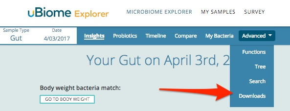
Then select “Download Taxonomy CSV” (Figure ??)
and a CSV copy of your results will be downloaded to your computer.
Once the data is in Excel, you can work with it just as you would with any Excel data sheet. Here’s how one of my recent uBiome taxonomy files looks in Mac Excel (Figure ??)
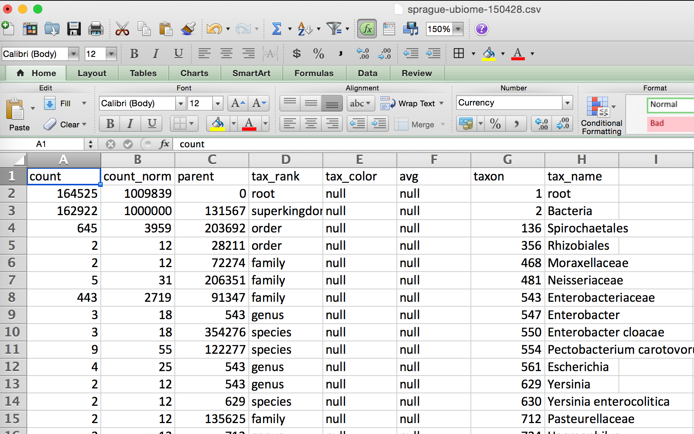
At this point, we can now apply the full power of your Excel skills to do the analysis. I usually start by turning the sheet into a “table”, to make it easier to do filtering and sorting later. Most popular spreadsheets have an easy way to do this. On Mac Excel, I do that from the “insert” menu:
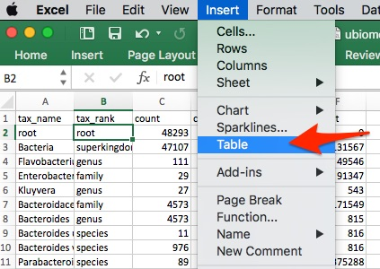
Once I have a table, then it’s easy to apply a filter. For now I just want to look at the Phylum level, so I click the tiny triangle to the right of the “tax_rank” label, like this:
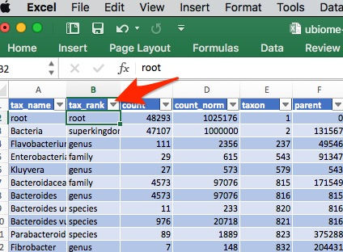
And now I can look just at the Phylum rank. I won’t bother showing each step after this, but after filtering and sorting, I can quickly end up with something like this:
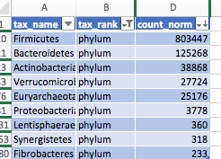
Looks like there is about 80% Firmicutes in this sample, with Bacteroidetes at about 12%, and a few other phyla under about 4%. We’ll go into more detail about what this means, but first let’s talk a little about the uBiome taxonomy file format.
2.3.2 uBiome JSON taxonomy files
Excel is great for a quick overview of your sample, but to really take advantage of the raw data it helps to understand the raw JSON format.
After uBiome’s lab completes the sequencing of your sample, the data generated goes into a bioinformatics pipeline where powerful algorithms use the zillions of DNA letters to find names for the specific organisms that inhabit you. One result, after many hours of computation, is a list of the organisms (taxa) found, along with their taxonomical rank and abundance. The result is stored in a simple structured text format called JSON (JavaScript Object Notation), commonly used across the web. Although it’s not as convenient for people as the rest of the uBiome web site, programmers refer to JSON as “human readable”, because if you squint enough you can sorta tell what it means without a computer program. Here’s a sample:
{
"download_time_utc": "2016-07-30T02:04:44Z",
"sequencing_revision": "72126",
"site": "gut",
"sampling_time": "2014-05-16T07:56:00.000Z",
"notes": "Before starting probiotics experiment",
"ubiome_bacteriacounts": [
{
"taxon": 1,
"parent": 0,
"count": 57603,
"count_norm": 1001617,
"tax_name": "root",
"tax_rank": "root"
},
{
"taxon": 2,
"parent": 131567,
"count": 57510,
"count_norm": 1000000,
"tax_name": "Bacteria",
"tax_rank": "superkingdom"
},JSON is just structured data. That’s it: a big bunch of lookup keys and values. The keys are unique identifiers and the values are their values. The whole file looks that way. The only requirement of a JSON file is that it be precisely consistent with this pattern, because after all it will need to be read by a computer eventually.
The uBiome Taxonomy JSON files include the key uBiome_bacteriacounts which is mapped to a bunch of fields, each representing a particular organism found in your sample. Look at the figure above to get the basic idea.
2.3.4 Converting uBiome taxonomy JSON to Excel
As already noted, it’s easy to bring uBiome taxonomy data into Excel, and that’s fine for just one or two samples. But if you want more powerful analysis, you’ll need the raw JSON. Go to the uBiome Explorer page and click on the section labeled “Advanced” and then “Downloads”:

You’ll see a page of JSON representing what uBiome found in your sample.
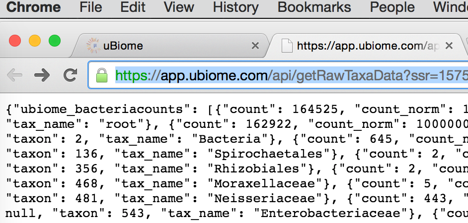
On a desktop computer, if you select-all (press control-A or command-A) then you can copy this data to the clipboard and then into an email to share with a friend.
If you like, you can even convert the JSON directly into Excel. Google “Json to Excel” or “Json to CSV” and you’ll find one. Just paste your data into one of those sites to convert it for either Excel’s native XLS or XLSX format, or the more universal CSV format, readable by Excel. Here are a few of the sites I’ve tested:
http://www.convertcsv.com/json-to-csv.htm
http://www.json-xls.com/json2xls
It’s nice to know that we can always go back to a spreadsheet version when needed. But the real power of JSON comes when you want to handle more than just one or two samples.
2.3.5 Comparing samples
There are two main things you’ll want to measure when comparing two samples:
Uniqueness: which organisms are found in only one sample and not the other? If you are comparing two samples from the same individual (e.g. Yourself), then uniqueness is another way of talking about either extinctions (when a taxon has disappeared entirely in a later sample) and appearances (when a new taxon magically shows up). In other words, you care a lot about the order in which the samples were taken.
On the other hand, if you’re comparing two separate individuals, then the ordering of the samples doesn’t matter. Uniqueness just tells which organisms are unique to a specific person.
Relative abundance: which sample has more of which organism? There are two senses in which we care about the relative frequency of an organism’s occurrence in a sample. You might care, among all the taxons found, which ones are more highly represented in absolute amounts? Or you might care on a relative basis. To help understand why this matters, it may help to think of the following specific example:
In many Americans the phylum Firmicutes makes up a majority of the sample, often reaching 60% or more. You might find two people, one who has 60% Firmicutes and the other with 30% — only half as much. The relative difference is 2x and the absolute difference is 30 percentage points.
On the other hand, you might find Bifidobacterium makes up 10% of the first sample and 5% of the second. In this case, the relative difference is 2x — just like the Firmicutes case — but the absolute difference is only 5 percentage points, much less than in the first example.
The built-in uBiome web tools look for relative differences. A taxon might be a minuscule component of both samples, but when you start from a small base, even a few additional organisms can make up a big percentage change. In the extreme case, a sample with a count_norm of 100 compared to another sample with a count_norm of 300 will show a 3X increase — very high in aBiome terms, even though the absolute difference is only 300 - 100 = 200 organisms.
Compare that with a an organism with a count_norm of 50,000 in one sample and 51,000 in another sample. UBiome’s algorithms will treat these as a virtual tie, even though the absolute number of organisms in the second sample outnumber the first by 1,000 organisms.
Which method of measuring is better? It depends on what you care more about. Some species need only a tiny representation in a sample to make a big difference in health outcomes.
I prefer to use both methods of measurement: absolute number changes for the most popular taxons, and relative amounts more for the less-popular ones.
Here’s an example showing two samples I took, one day after another.
| 2017-06-07 | 2017-06-08 | |
|---|---|---|
| Firmicutes | 72.04 | 59.75 |
| Bacteroidetes | 15.47 | 28.05 |
| Verrucomicrobia | 6.09 | 6.73 |
| Euryarchaeota | 5.19 | 2.79 |
| Actinobacteria | 5.15 | 3.89 |
| Proteobacteria | 1.03 | 1.12 |
The Abundance shown is a graphical heatmap that makes it easier for the eye to see changes, especially when looking at large amounts of data. In this chart, darker squares are lower in abundance than the lighter ones, so we can see that while Firmicutes stayed at a high percentage both days, Bacteroidetes dropped a bit and I saw the brand new appearance of both Euryarchaeota and Verrucomicrobia.
2.4 Exploratory Data Analysis
If you feel comfortable writing simple programming scripts to analyze your data, the following sections will show you how to do more detailed analysis.
2.4.1 Analyze your uBiome Results in Python
The charts and tables you see in the uBiome Explorer are generated from the same data file that you can download for yourself in the Advanced tab. If you’re comfortable with programming, you can pull that data into your favorite software tools for even more analysis.
To get started, look at the open source uBiome Tools Repository which contains source code that will let you:
Compare two samples to find the unique organisms in each.
Compare two samples and show the differences in counts for each.
Merge more than one sample into a single file.
For Python programmers, the code is available either in the official uBiome library or as an easy-to-install library hosted on the Python Package Index and installable through PIP. Just type this from the console application on your computer (either Terminal on Mac, or Powershell on Windows).
$ pip install ubiomeThe uBiome package is designed for either Python 2 or 3, and once installed you can use it as a console script, for a new system command like this:
> ubiome -h
usage: ubiome.py [-h] [-c COMPARE] [-u UNIQUE] [-d DEBUG] sample1 sample2
positional arguments:
sample1 filename for a valid uBiome JSON taxonomy file
sample2 sample you are comparing to
optional arguments:
-h, --help show this help message and exit
-c COMPARE, --compare COMPARE
Compare sample1 with with sample2
-u UNIQUE, --unique UNIQUE
Find items in sample1 not in sample2
-d DEBUG, --debug DEBUG
turn debug mode to run testsIf you have two uBiome-formatted JSON files in the current directory, try this:
$ ubiome -c sample1.json sample2.jsonIt will compare the two samples and output a comma-separated (CSV) dump of the differences between them. Similarly, the following command returns the parts of a sample that are unique:
$ ubiome -u sample1.json sample2.json > uniques.csvNow you’ll have a new file in your directory, “uniques.csv”, that you can load into any spreadsheet program. The file will have a series of rows representing each taxa of bacteria that are unique, i.e. only found in “sample1.json”.
You’ll find both the compare and unique commands useful for understanding the differences between two of your own samples. If you have a sample of yourself before taking probiotics, and another afterwards, for example, this can help you tell what organisms changed and by how much.
The uBiome package can of course be imported into Python as the basis of your own scripts and modules. To see how, run the following series of commands in your Python 2+ or 3+ console:
$ python
>>> from ubiome import *
>>> x1 = UbiomeSample("sample1.json")
>>> x2 = UbiomeSample("sample2.json")
>>> x = UbiomeMultiSample(x1)
>>> x.merge(x2)
>>> # continue to merge as many additional samples as you like
>>> x.write("x.csv")Now your directory will have a new file ‘x.csv’ with all samples merged. The first row is all the taxons ever found in your samples, and the other columns are your different samples, with rows containing the count_norm value for every taxon, including zero values for those taxa that are missing in a particular test.
The merged form, called a UbiomeMultiSample, can do even more. For example, continue to merge a few more samples in the example above, and then run this code:
samples = x.originalSampleObjects # just the UbiomeSample objects of the merged items
diversity = [sample.diversity() for sample in samples]
dates = [sample.date for sample in samples]If you have matplotlib on your system and run this:
plot(dates,diversity)You will see this chart that plots the diversity of a series of samples over time:
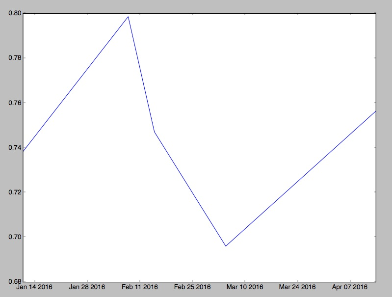
See the script ubiome_example.py for a complete example. There are also several user-supplied JSON files for you to try if you want to test your own code on real samples.
2.4.2 Make a single sheet with all your samples
I often read news about a fresh scientific discovery involving the microbiome and immediately wonder if the discovery applies to me. For example, I recently saw a study from Oregon State University3 that seemed to find a link between high sugar diets and “cognitive flexibility”, i.e. your ability to adapt and adjust to changing circumstances. The study’s author, Kathy Magnusson, a professor in the OSU College of Veterinary Medicine, found that mice who eat lots of sugar have elevated levels of Clostridiales bacteria, and that this seemed to relate to a slower ability to solve a maze. Hmmm, I thought — how much Clostridiales do I have?
If you have just one uBiome result, that’s easy: log into http://explorer.ubiome.com and search for it in the section “All My Bacteria”. But in my experience a single result doesn’t tell you much. You really need at least two and hopefully several uBiome results to see what might be actionable. In my case, I want to know how my Clostridiales may have changed over time.
If you are comfortable with programming, uBiome has an opensource Python script to generate a single Excel table that combines multiple separate JSON files. Something like this:
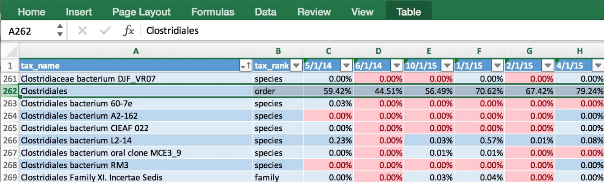
The data makes it easy to generate a chart showing how my Clostridiales changes over time:
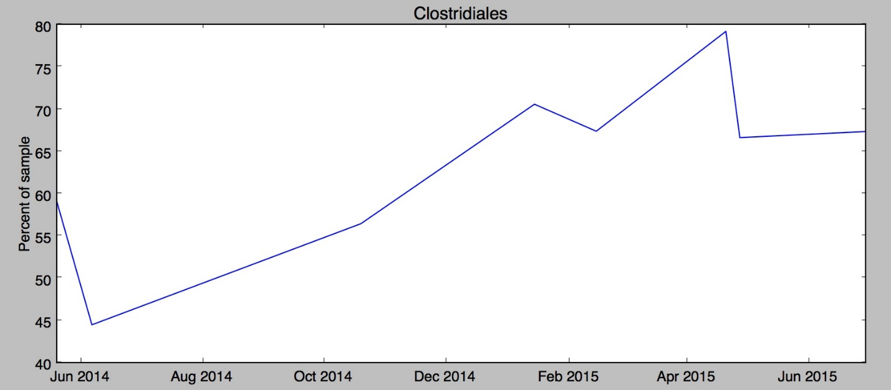
Hmmm, in my case it looks like something happened since last fall to increase my Clostridiales levels. Maybe it was the potato starch I tried in order to hack my sleep? Was it my trip to Central America in February? And of course the biggest question: has the increase affected my cognitive flexibility? I’m not really sure. Whatever happened, the level of Clostridiales seems to have stabilized in the past couple of months.
uBiome has identified more than 900 unique taxa (groups of organisms) in the half-dozen samples I’ve submitted over the past year, and after running this script I have them all laid out on a single page. Now, armed with this one spreadsheet I can search anytime for a new microbe and quickly see if I have it now, or if it’s ever been detected in a previous test. Reading news about microbiome has taken on a whole new personal meaning when I can see if the discovery relates to me.
Next we’ll show you how to make your own charts.
2.4.3 Working with FASTQ files
The uBiome JSON taxonomy information will be more than enough for most people new to biology. But for anyone interested in expanding their bioinformatics skills, the raw data files are the place to look.
FASTQ files are the text-based results of a run at your sample using one of Illumina’s high-end gene sequencers.
For example, the first line in my data is:
@NS500457:29:H2HLGAFXX:1:11101:16760:1033 1:N:0:ACTTACA+NTGCGAAThis contains information about the gene sequencing hardware uBiome used for this sample. The other lines in the raw text file contain the actual base pairs detected by the sequencer, along with quality information to indicate the certainty of a particular read. In my case, the entire file is over 170,000 lines long, and that’s just one of the eight files in the FASTQ archive. That’s a lot of data!
How sequencing works
Each strand of DNA will be read from two directions (called 3-Prime and 5-Prime). This means that a given DNA letter will be read twice (once forward, once backward), so the count field of your JSON file will never show a number less than 2. But 2 is a tiny number that might just be there by chance. For that reason, careful scientists will avoid using any data with such small abundances.
uBiome will not release samples with under 3000 reads, so the minimum abundance you should bother with is 2/3000 = 0.07%. Most samples will have far more than 3000 reads (my average is closer to 60,000), so if you want to compare small abundances, you shouldn’t bother with anything less than 0.07%.
Because it’s hard to compare low-abundance taxa across many samples that may have wide variations in total read counts, I discount anything with under about 12 reads if you are comparing across samples that are all greater than 10,000 reads, and 42 if you are comparing against those of 3,000 reads. Why those numbers? Because 2/10000 = 0.0002 multiplied by my average of 60000 reads is 12; meanwhile, 0.000.007 % of 60,000 is about 42 ^[You can do this with the following Phyloseq command:
prune_taxa(taxa_sums(gut.norm)>42, gut.norm)]. These are just rough guidelines – a more thorough calculation would take into account the exact number of reads for all samples. But a conservative scientific approach says it’s better to throw away information that might be low quality.
Quality of your FASTQ
Here’s how to check the quality of your overall FASTQ file.
Sum( count of the number of lines in the R1 files / 4 )
In a Terminal session on OSX, you can check this with the following command.
$ gzcat *R1*.fastq.gz | echo $((`wc -l`/4))
A typical result for one of my files is 0.375.
Study your FASTQ online
Although it’s possible to analyze this data on my own in a tool like BioPython, it’s much easier to submit the raw data to a public gene processing server, such as the Metagenomics Analysis Server (MG RAST) hosted by Argonne National Labs at this site:
Note: You must use the Firefox browser (not Chrome, IE, or Safari), and before submitting any jobs you must apply for a (free) login ID, which you receive by email in a day or two.
After logging in with your new account ID, click the “upload” icon on the home page and follow the process to prepare and submit your data:
Ignore the part about preparing the meta data; you can add it later.
Upload files. The site offers to let you upload from the web browser, but I’ve had better luck using their api and the following curl command:
curl -H "auth: webkey" -X POST -F "upload=@/path\_to\_file/metagenome.fasta" "<http://api.metagenomics.anl.gov/1/inbox/>" > curl\_output.txtI just type this from Terminal on my Mac. Note that you’ll need to get your own webkey (hit the ‘view webkey’ button on the submission page) which you will substitute into the curl command line above. Also change the filename part of the “upload=@” section to point to the correct file. Note that uBiome fastq files are compressed, but it’s okay to upload them as-is. You’ll uncompress them on the server after the upload.
- Manage your inbox. Once the file has successfully uploaded, you’ll see it in your inbox. At this point, you should “unpack selected” if you uploaded a compressed file. Note depending on how busy the server is, it may be minutes or even hours of waiting, and pressing “update inbox” before you see the File Information shown below.
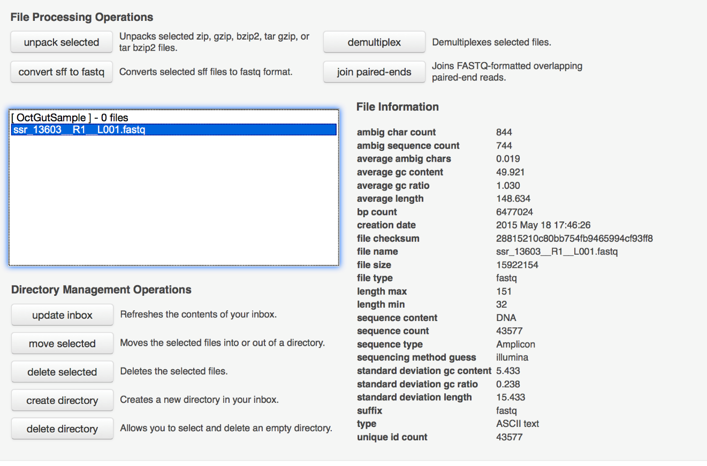
Next you’re ready to submit the data
Here are my suggestions for this section
Check the box to say you won’t supply metadata.
Create a new project and select it.
Select the files you uploaded
Use the default values to choose pipeline options
Submit the job, being sure to make the data publicly accessible immediately, to increase the priority.
There you go! Now a job has been submitted and you wait for it to complete. It usually takes a day or two to complete, after which you’ll receive an email notification. After that, click the bar chart icon on the upper right of the page:
This brings you to an analysis page where you can study your data in much more detail.
When I select my data under “Metagenomes” on the analysis page, I’m offered several options for Annotation Sources. Since the uBiome fastq data comes from 16S ribosomal RNA, I choose to compare my data against one of the large databases of known RNA. The popular Greengenes database is one of them, so I select it, and then ask to generate a table of the results.
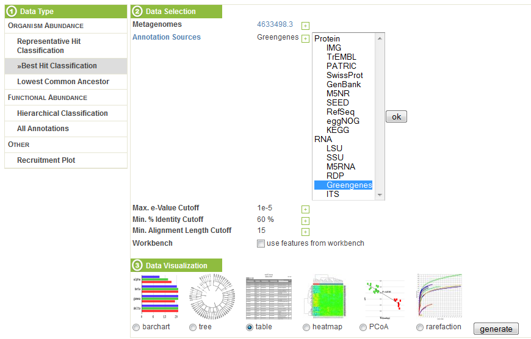
The table, sorted by abundance and filtered to phylum, looks like this:
The results roughly conform to what we see from uBiome: the most common organisms are the same in each case, and although the scales are different, the abundance computed corresponds roughly to what we see from the uBiome count field.
Other MG RAST tools let you compare your data against other databases of bacteria and proteins, graph the results, and perform sophisticated statistical analysis to determine other unique features of your sample. You can also compare your sample to microbiomes that have been uploaded by others, enabling you to study your results in much more detail.
References
Wexler, H. M. 2007. “Bacteroides: The Good, the Bad, and the Nitty-Gritty.” Clinical Microbiology Reviews 20 (4): 593–621. doi:10.1128/CMR.00008-07.
Hehemann, Jan-Hendrik, Gaëlle Correc, Tristan Barbeyron, William Helbert, Mirjam Czjzek, and Gurvan Michel. 2010. “Transfer of Carbohydrate-Active Enzymes from Marine Bacteria to Japanese Gut Microbiota.” Nature 464 (7290): 908–12. doi:10.1038/nature08937.